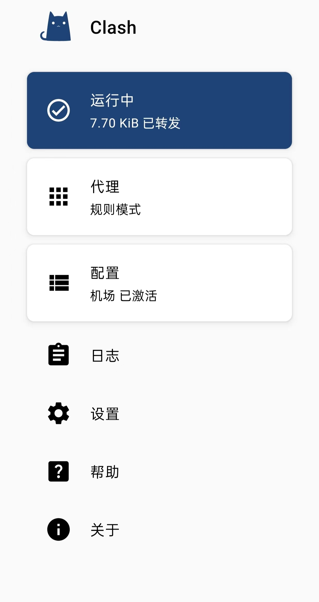

10r 一年机场
支付 10r 购订阅链接，以下为教程，分 windows和 Android
windows下载链接，解压密码：b417Android下载链接，解压密码：dojf
windows教程
1.下载 clash for windows：
2. 点击配置：
3. 将我给你的订阅链接复制上去并下载:
4. 点击代理，选择全局模式，测试网速
5. 选择其中一个节点，并开系统代理，愉快科学上网
Android教程
1. 下载 clash for windows
2. 添加并设置配置，将我给你的订阅链接复制进去
点击位于界面中上方的“配置”，然后点击右上角的加号，选择“URL（从 URL 导入）”。进入如下界面：
配置名称自定，不建议禁用自动更新，请点击“已禁用”，填入自动更新时间（建议填入60） ，并点击“确认”。
所有设置的更改方式为：点击左侧的编辑（铅笔）图标，显示输入框，更改完以后点击确定保存更改。
填入所有推荐设置后应为如下界面：
请注意：URL 应填入自己的订阅链接，填入后内容可能与上图的 URL 所示内容不一致。
全部填入后，点击右上角的保存图标保存设置。
如果保存设置失败，请检查：
是否连接网络，最好是 Wifi 而不是移动数据。
订阅链接填入是否正确。
是否已经开启了其它代理。
请稍等一小段时间后再进行几次尝试，根据经验某些机场无法下载可以通过此方式解决。
如果这些方式仍然未解决问题，请尝试 Google 错误信息获取更多帮助。
3.选择节点和模式，开始使用
点击配置右侧的省略号，可以进行更新配置、编辑配置等操作。
注意：无论何时，如果遇到大量节点不可用，请先刷新订阅！

点击左上角返回主界面，会出现一个 Clash 想要设置一个 VPN 连接的窗口，请允许。
允许之后，代理会默认开启，如下图所示
可以点击蓝色的”运行中“将代理关闭。
代理关闭后，如下图所示：
可以再次点击灰色的按钮将其开启。
代理开启后，点击”代理“可以配置代理，点击后界面如下所示：
点击右下或者右上的闪电按钮可以测试延迟。
测试延迟仅供检验是否连通，不建议用作速度快慢的参考。
点击右上角的省略号，再点击模式，可以选择代理模式。代理模式列表如下图：
其中常用的是中间三种，仅介绍这三种。
若选择全局模式，所有的网站经过代理访问。（通常建议选择此项）
若选择规则模式，只有国外的网站才会经过代理访问。
若选择直连模式，则所有网站都不经过代理。